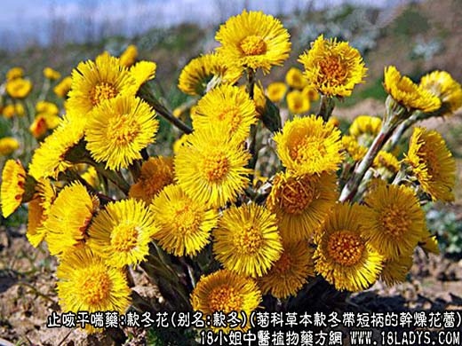
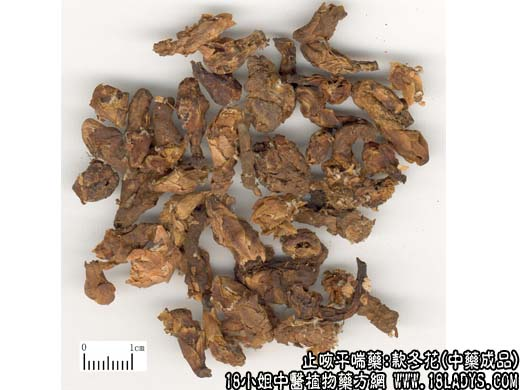
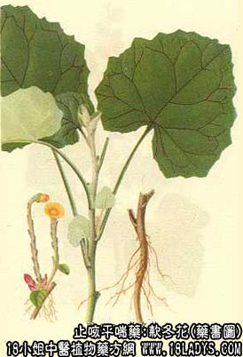

款冬花为常用中药，《神农本草经》列为中品。
别名：款冬、冬花。
来源：为菊科多年生草本植物款冬的包有多层苞片，带短柄的干燥花蕾。栽培或野生。
产地：主产于河南、甘肃、陕西、山西等地。湖北、四川、内蒙古、青海、新疆、西藏等地亦产。
性状鉴别：花蕾呈棒状或长椭圆形，单一或2～3并生，有时可达5朵。俗称“连三朵”。一般长约1～3厘米，直径约0.5～0.8厘米。花蕾及花柄上包有粉紫色或淡棕褐色鳞状苞片数层（往往被误认为是花瓣）。鳞状苞片包裹着黄棕色未成型的细小舌状及管状花（开放时黄色）和蜘蛛饲样的絮状物。气清香，味微苦辛，嚼之如絮。
以朵大2～3并连，颜色粉紫鲜艳，花柄短者为佳。
主要成分：含款冬醇、植物甾醇，蒲公英黄色素、鞣质、二十七烷等。
功效与作用：止渴下气。实验证实确有一定的镇咳效力，但祛痰作用不显著。
炮制：生用或蜜制。
性味：入肺经。
功能：风寒喘咳，痰多，劳嗽，咯血。
临床应用：为止咳常用药。前人经验认为款冬花温而不燥，有邪可散，散而不泄；无邪可润，润而不寒；因此，一切咳嗽，无论属寒热虚实，只要与肺经有关，都可用之。现代也用于多种咳嗽，尤其伤风感冒、上呼吸道炎而喘嗽者，更常应用，方如款冬花汤。
款冬与紫菀常配伍同用，前者能止咳，后者能祛痰，合用却能互补不足，共奏化痰止咳的效果。两者的微细差别是：紫菀性较辛燥，可用寒咳；款冬性较清润，治燥咳效果更好。
用量：4.5～9g。